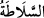
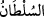
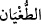
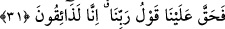
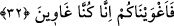

zorlayacak bir gücümüz yok. Fakat siz kendiniz azgın bir toplum idiniz.»
Reisler, kendilerine uyanlara yahut kâfirler kendi akranlarına: “Bilâkis, derler, siz
inanan kimseler değildiniz.” Yani biz kuvvet ve kahırla sizi imandan alıkoymadık.
Bilakis siz kendi tercihinizle inanmadınız; buna muktedir olduğunuz halde imandan yüz
çevirdiniz ve küfrü imana tercih ettiniz, derler.
“Bizim sizi zorlayacak” seçim/tercih hakkınızı elinizden alacak “bir gücümüz yok. “
” kelimesi, muktedir, üstün, gâlip ve hükümran olmaktır. “
” ise gâlip ve gücü
elinde bulunduran, demektir.
“Fakat siz kendiniz azgın bir toplum idiniz.” Siz kendi tercihinizle azgınlığı seçtiniz
ve bunda ısrar ettiniz. “
” isyanda haddi aşmayı ifade eder.
31. «Onun için Rabbimizin hükmü bize hak oldu. Biz (hak ettiğimiz cezayı)
mutlaka tadacağız.»
“Onun için Rabbimizin hükmü” - ki bu “Mutlaka sen ve sana uyanların hepsiyle
cehennemi dolduracağım!” (Sâd 38/85) âyetidir- “bize hak oldu. Biz” bize tehdit
olarak bildirilen “(hak ettiğimiz cezayı) mutlaka tadacağız.” Diğer bir ifadeyle
“Doğrusu o gün azâbı tadanlardan olacağız” demektir.
32. «Biz sizi azdırdık. Çünkü kendimiz de azmıştık.»
“Biz sizi azdırdık.” Sizi bir zorunluluk olmaksızın azgınlık ve sapıklığa dâvet ettik;
siz de azgınlığı olgunluğa tercih ederek bu dâvete icâbet ettiniz. Biz sizi azgınlığa ve
yoldan çıkmaya çağırdık;“çünkü kendimiz de azmıştık.” Biz de azgınlıkta sâbit ve
dâimdik. Azgınlıkta bizim gibi olmanız için dâvetin bu mertebesinde bizim sizi
azdırdığımıza dair bize bir sitemde bulunma hakkınız yoktur. Biz azgın kimseler idik,
sizin de bizim gibi olmanızı istedik. Darb-ı meselde: ‘Harmanı yanmış, harmanı yanmış
ister.’ denilmiştir.
Ben sarhoşum, isterim ki sen de sarhoş ol
Tâ ki benimle beraber sen de yanmış ol
Hak Teâlâ buyurdu ki: